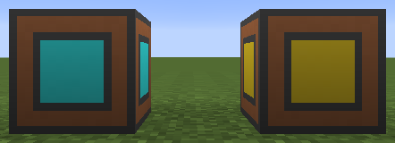

There are no recipes for the blocks in this mod. They are only obtainable through the creative tabs, the /give command, and similar means.
This image shows the Admin Fluid Provider with, from left to right, no fluid, milk, water, lava, steam, oil, and fuel.
This image displays the Admin RF Provider, left, and the Admin EU Provider, right.
